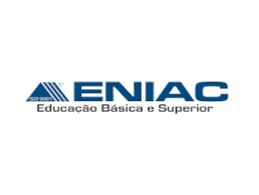

Formação
Faculdade Impacta

Como foi o Faculdade?
Ensino Médio

Como foi Ensino medio?

Como foi o Faculdade?
Como foi Ensino medio?
Cargo: Analista de suporte JR.
Periodo: Jun/2021 - Atualmente
Como foi?
Cargo: Estagiario(Comunicação)
Periodo: Dez/2019 - Jun/2021
Como foi?
Cargo: Estagiario(suporte Windows Sever)
Periodo: Out/2019 - Dez/2019
Esta foi a primeira experiencia que tive dentro da TIVIT, nela eu prestava suporte para a área de Windows Sever. Com o auxilio da ferramente Service Now e Big Panda eu recebia chamados de espaço em disco, falha de execução de serviços e falha de conexão com as maquinas. Fazendo isso respeitando o SLA de cada alarme re recebiamos pelas ferramentas de monitoração.
Crago: Vendedor de Informatica
Periodo: Jul/2017 - Out/2019
Está fase da carreira dentro da Kalunga eu tinha a funça de realizar a venda de produtor relacionados a informatica como: Impressoras, multifuncionais, celulares, computadores, notebooks, monitores, gps e telefones com garantias extendidas de 12 ou 24 meses conforme o regulamento da seguradora Cardf e trabalhando com sistema de metas individual e em grupo. Era realizado o recebimento, conferencia, abastecimento e organização dos produtos no PV(ponto de venda). Para manter tudo organizado era realizados contagens para verificar se nenhum produto foi furtado.
Cargo: Auxiliar de loja.
Periodo:Abr/2015 - Jun/2017
Nesta fase da minha carreira na Kalunga eu fui contratado como auxiliar temporario para o periodo de volta as aulas, que é a época mais movimentada das lojas por conta do retorno do periodo letivo, neste momento era realizado todo o abastecimento e organização dos produtos de papelaria no PV(ponto de venda), a limpeza de loja, recebimento de caminhões, atendimento ao caixa e realização da conferencia de produtos que chegavam nos caminhões.
Cargo: Auxiliar de loja(Temporario)
Periodo:Jan/2015 - Mar/2015
Na primeira fase da minha carreira na Kalunga eu fui contratado como auxiliar temporario para o periodo de volta as aulas, que é a época mais movimentada das lojas por conta do retorno do periodo letivo, neste momento era realizado todo o abastecimento e organização dos produtos de papelaria no PV(ponto de venda), a limpeza de loja, recebimento de caminhões e atendimento ao caixa.

Aprenda o que sao estruturas de dados e algoritmos

Como gerenciar seus projetos trabalhando remotamente

Como se comunicar de forma eficiente e eficaz trabalhando remotamente

Construindo páginas para internet com bootstrap

Desmistificando o trabalho remoto

Funções
.png)
IDE instalação e configuração(Visual Studio Code)

Introdução a criação de websites com HTLM5 e CSS3

Introdução a qualidade de software

Introdução ao GIt e ao GitHub

Introdução ao JavaScript

Linux: introdução ao sistema operacional e terminal

Lógico de programação essencial

Projetos ageis com SCRUM

Rotina e produtividade individual no trabalho remoto

Shell script - Manipulando Arquivos

Sintax e Operadores

Sintaxe básica em JavaScript

Variáveis e Tipos

Kanban parte 1: Fundamentos Essenciais

Kanban parte 2: Metricas e Praticas Avancadas

Python 2: Programando com a linguagem

Windows Introduçcao ao Prompt

Windows Server

Python - Programando com a Linguagem